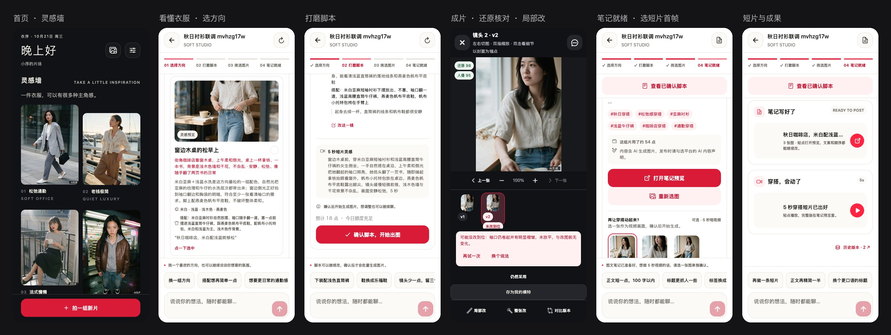

衣序 · 穿搭笔记智能体¶
小红书穿搭博主接到品牌合作，品牌方往往只给几张衣服图。博主在「衣序」里和智能体多轮对话：看懂衣服、定方向和整套搭配、写脚本，确认后批量出"博主 × 衣服 × 场景"的成片，一句话改图，最后得到一篇可直接发布的图文笔记和一条短视频。赶更新时切到「一键出片」，全套自动出好，中途随时接手。

- 线上服务：
https://47.97.153.127:8443 - App：iPhone 真机 Release 包已安装；iOS / Android / Web 同一套代码
- 管理端：
/admin（模型切换、配额、用量、任务队列） - 文档在线版：
https://47.97.153.127:8443/docs/（全部文档的 HTML 阅读版）·https://47.97.153.127:8443/docs/design/（UI 设计板）
交付材料¶
| 看什么 | 在哪 | |
|---|---|---|
| 1 | 文档：功能清单、场景与调研、生成能力实测、框架选型、下一步规划、设计约定、UI 设计稿、设计系统 | docs/功能清单.md · docs/调研.md · docs/调研-Chiccify对照.md · docs/规划-模特库与人像一致性.md · docs/设计.md · docs/UI设计稿.md · docs/设计系统.md |
| 2 | 开发记录与卡点：从接到作业到交付的完整时间线，每个卡点怎么定位、怎么解 | docs/开发记录.md |
| 3 | 开发感受 | docs/开发感受.md |
| 4 | 代码：服务端、App、管理端，以及验收证据与部署 | server/ · app/ · docs/验收与部署.md |
全部文档的 HTML 阅读版（带目录与流程图）：docs/html/index.html，线上同一份在 47.97.153.127:8443/docs/。
技术栈¶
App（Expo / React Native / TypeScript）──HTTPS：REST + SSE──▶ FastAPI
│
LangGraph 智能体（Postgres checkpointer，thread = 项目）
阶段之间：状态机（代码管钱、可审计）
阶段之内：ReAct（模型选工具、写回复）
│
PostgreSQL（业务表 + 任务队列 + checkpoint）
▲
Worker × 2（SKIP LOCKED 领任务）
├─ 豆包 Seedream 5.0 pro / wan2.7：出图、改图（管理端可切）
├─ qwen3-vl-plus：看图、还原核对
├─ wan2.6-i2v：图生视频
└─ DeepSeek：对话、脚本、笔记
| 层 | 技术 |
|---|---|
| 服务端 | Python · FastAPI · LangGraph 1.x · SQLAlchemy / Alembic · PostgreSQL 16 · Pillow · ffmpeg · Docker Compose · nginx + TLS |
| App | Expo SDK 58 · React Native 0.88 · expo-router · 自建设计系统（DTCG token，lint 禁止裸色值） · Playwright 端到端 |
| 管理端 | 服务端托管的轻量 HTML 页面，与 App 共用设计 token，无前端运行时依赖，独立交互回归 |
| 工程 | GitHub Actions · pre-commit 钩子 · Makefile · ruff / ESLint；服务端历史覆盖率 91.09%，口径见工程规范快照 |
怎么跑¶
需要 Node 22.13 或以上。以下每组命令均从仓库根目录执行，长期运行的进程分别使用不同终端。
# 终端一：App 假服务（不需要启动 Python 服务端）
cd app
npm ci
npm run mock
# 终端二：Web App，显式连接本机假服务
cd app
EXPO_PUBLIC_API_BASE=http://localhost:19301 npm run web
App 如果已在设置里保存其他服务地址，需同步改为 http://localhost:19301；手机连接方式见 App README。
# 可选：运行真实服务端链路，模型仍使用 Mock
cd server
MOCK_PROVIDERS=1 docker compose up -d --build
服务端地址与环境准备见 服务端 README；连接该服务端时相应调整 App 服务地址。
# 仓库根目录：检查与文档生成
make check # 服务端 ruff + pytest，App 八项校验
make docs # 重新生成 docs/html
工作方式¶
调研与实测 → 设计先行（契约、UI 设计稿、设计 token）→ 工程底座（CI、假服务、迁移与部署）→ 按设计还原主链路并在线上留证据 → 产品完整度与质量 → 独立评审、修复、最终回归。
整个过程以 AI 原生方式协作：我定方向、拍板与验收，Claude 负责调研、契约、评审与复测合并，Codex 按任务书并行实现。分工与每一轮的细节在 docs/开发记录.md。